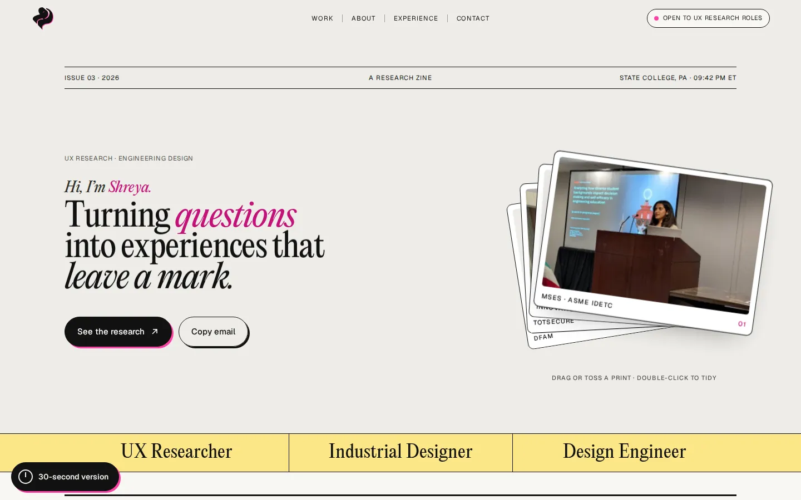
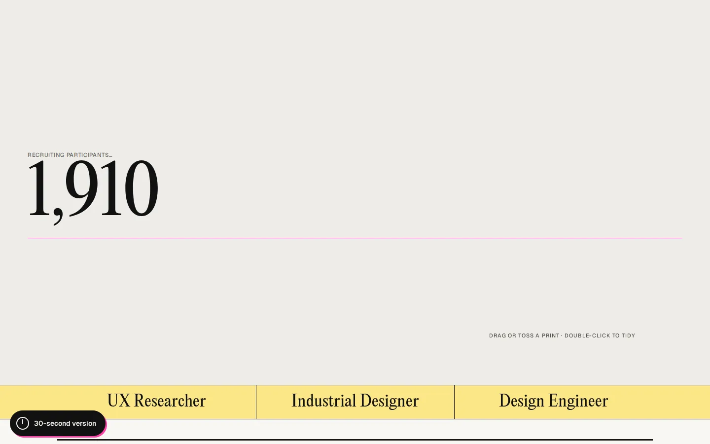
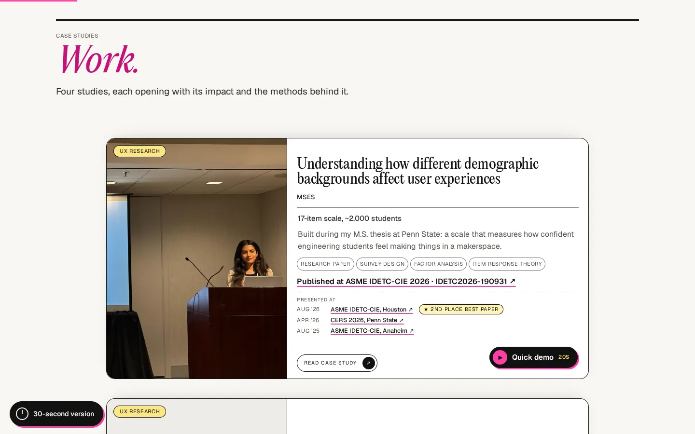
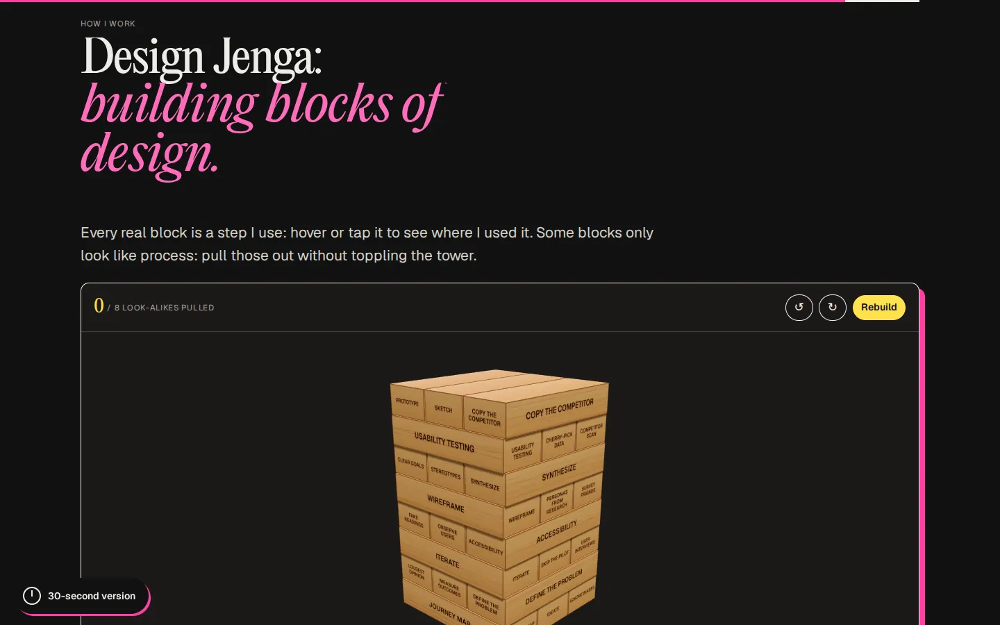
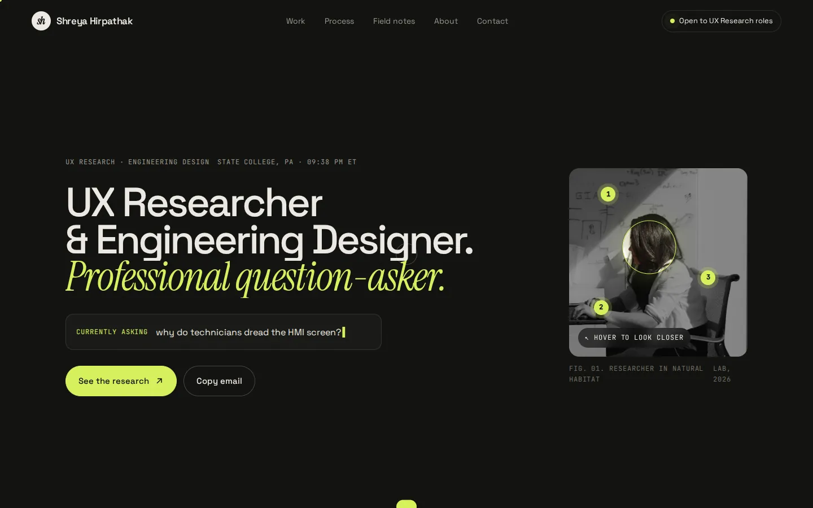
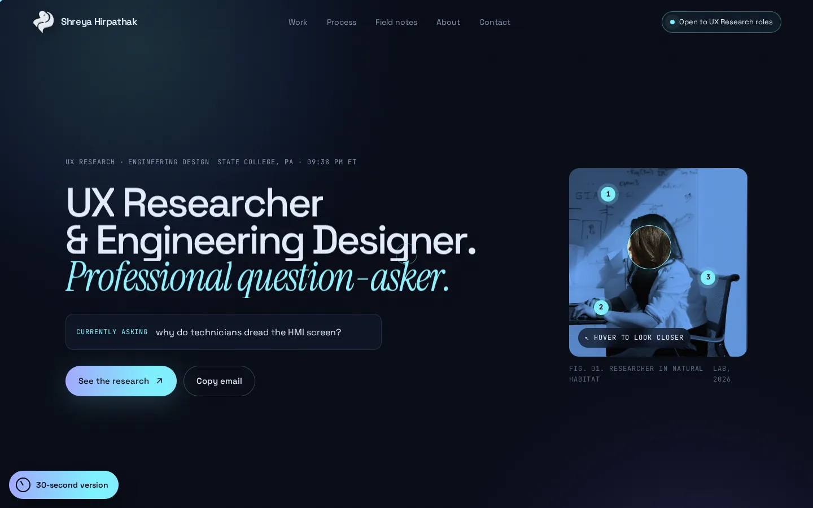
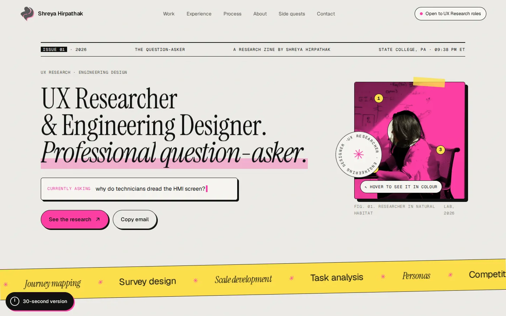
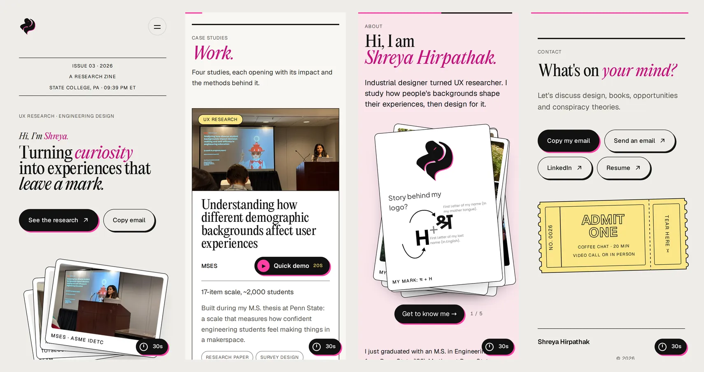

This portfolio
A site a recruiter can read in a minute, that still feels like me
small, reviewed changes, each one previewed before it went live
Designed in the browser · Sep 23 – Oct 22

Most portfolios look the same and hide the research.
Problem
Recruiters skim dozens of portfolios between calls. Template layouts blur together, and the actual research gets buried under process diagrams.
Approach
Treat the site like a research zine: evidence first, every interaction proving a skill, and every change tried live in the browser before it ships.
Outcome
A fast, static, accessible site. Work is one scroll away, there's a 30-second version for skimmers, and enough personality to remember me by.
One reader, and they're in a hurry.
- Hiring for UX Researcher or UX Designer roles at product companies.
- Usually on a laptop between candidates. Sometimes on a phone, from a LinkedIn link.
- Has a minute or two to decide: can she run real research and turn it into design decisions?
- Success looks like this: they open a case study, then email me or download the resume.
- Evidence before decoration. Every number and interaction should prove a research skill.
- Work first. Case studies are reachable within one scroll.
- Show the person, not a template. Real photos, notes and charts over generic UI.
- Readable by a busy reader. Short copy, clear hierarchy, accessible contrast.
Hiring managers are the second audience. They arrive later and read a case study in depth, so the case pages carry the detail: methods, raw data, limitations.
Every section has one job.
| # | Section | Its one job |
|---|---|---|
| 0 | Loader | Counts up to 1,910, the students in my thesis survey, so the "researcher" frame is set in two seconds. |
| 1 | Hero | One headline, plus a stack of case-study prints you can drag and toss. |
| 2 | Roles strip | UX Researcher · Industrial Designer · Design Engineer, in one glance. |
| 3 | Work | Four case studies as stacked cards, each with a 20-second Quick demo of the real study UI. |
| 4 | Industry projects | Calidus and Godrej as compact cards with one outcome number each. |
| 5 | About | Who I am, four proof stats, and rolling ribbons of tools and research methods. |
| 6 | Experience | Work and education in tabs, so the timeline stays short. |
| 7 | How I work | Design Jenga: a playable version of my process. |
| 8 | Contact | A coffee-chat ticket, plus email, LinkedIn and resume in one row. |


A research zine: paper, ink and one loud pink.
The zine idea came from what research actually looks like: printed surveys, field notes, sticky labels. It gives the site a personality without fighting the content.
Two typefaces, one clear hierarchy.
A high-contrast editorial serif carries the voice: headlines, big numbers and the pink italic words that mark what matters. A neutral sans does the work: body copy, buttons and small uppercase labels. Every size is fluid, so it scales smoothly between phone and desktop.
| Role | Sample | Face | Desktop | Phone |
|---|---|---|---|---|
| Case title | This portfolio | Editorial New | 128px | 56px |
| Section heading | What's on your mind? | Editorial New | 66px | 39px |
| Hero headline | Turning curiosity | Editorial New | 59px | 41px |
| Chapter heading | Every section has one job. | Editorial New | 50px | 30px |
| Big number | 1,910 | Editorial New | 88px | 64px |
| Subtitle | A site a recruiter can read in a minute | Geist 400 | 32px | 22px |
| Body | Built during my M.S. thesis at Penn State. | Geist 400 | 16px / 1.6 | 16px / 1.6 |
| Button | See the research ↗ | Geist 500 | 15px | 15px |
| Label | Research methods | Geist, uppercase | 11–11.5px | 11–11.5px |
- Use fewer typefaces. Two families, three styles. The third font, a monospace for labels, was cut.
- Build a hierarchy that matches the story. Headings set expectations, labels organise, body text explains.
- Contrast is your best friend. Serif against sans, big against small, and pink italic for one to three words per heading. Never more.
- Spacing is a tool. Tight line height (0.95–1.05) and slightly negative tracking on big type. Roomy 1.6 line height on body, and open tracking on small uppercase labels.
- Align by function. Everything is left-aligned for reading. Only the masthead line is centred.
- Body text never goes below 16px. The one exception is the 15px About bio, kept to match its stats.
- Numbers that line up in columns use tabular figures, so the loader and stats don't jitter.
- Pink text uses the darker #C4127A to meet AA contrast. The bright pink is for shapes only.
- Sizes use
clamp(), so they scale with the screen between a phone minimum and a desktop maximum.
How I chose the faces
I didn't pick from specimen sheets. I built a font switcher on the real landing page and tried 38 pairings against my actual headline, About section and stats, removing options one round at a time.
The rounds taught me what the site needed. All-caps faces made long headlines hard to read. Scripts only worked for a single word. Free demo fonts were missing numbers and punctuation. Very wide faces pushed the hero headline onto four lines. Editorial New was the one that kept the zine's personality and still read cleanly at every size.
Play, but every toy proves something.
| Interaction | What you do | What it proves |
|---|---|---|
| Participant loader | Watch it count | The scale of my thesis survey |
| Print stack | Drag, toss, double-click to tidy | Real projects up front, not stock imagery |
| Quick demos | 20-second popups on each work card | The actual study instruments and UIs |
| Design Jenga | Pull blocks from a 3D tower | Which steps of my process are load-bearing |
| Tool + method ribbons | Scroll past, or tap to pause | Skills at a glance, without a wall of logos |
| Coffee-chat ticket | Tear-off ticket in Contact | An easy, low-pressure way to reach out |

Four weeks, three identities, a lot of cutting.



- A colour-lens hunt for hidden field notes in the hero photo
- An eye-tracking heatmap hero, then a halftone dot field
- Click-anywhere ink stamps with 26 shuffled phrases
- Skill bubbles around each role: almost 20 rounds in one day, then removed
- A field-notes affinity board, a magnifier cursor, an index-card About
- Senior designer: too much going on. That led to a minimal pass and a quieter hero.
- Recruiter critique: lead with proof. The About section was reworked around four stats and a clear "looking for" line.
- Design-rules audit: contrast, touch targets and focus states (see Accessibility).
Readable by everyone, on anything.
- WCAG AA contrast (4.5:1 for body text). The brand pink is too light for text, so links use a darker magenta, #C4127A.
- Body text at least 16px with a 1.6 line height.
- Touch targets of at least 44px on touch screens.
- Visible focus ring and a skip link. Every widget works with a keyboard.
- Moving ribbons can be paused by tap or keyboard. Animation respects reduced motion.
- Every change previewed at desktop (1440px) and phone (390px) widths before going live.
- 578 unused CSS rules removed in one clean-up pass.
- Search basics: canonical URLs, Person schema, sitemap and robots.txt.
- One self-hosted display font and one Google font. No framework to download.

Plain HTML, CSS and JavaScript. No build step.
The site is static: a home page, six case studies and a study kit, served free from GitHub Pages. That keeps it fast, cheap to host and easy to change.
The 3D tower is the only heavy part. three.js and cannon-es load only when you scroll to it, with a flat CSS tower as a fallback.
Tools: Figma for layout and assets, Claude Design for exploration, and Claude Code as a build partner. I set the direction, wrote the copy and reviewed every preview. Claude wrote and checked the code, and screenshotted each change on desktop and phone before I approved it.
What I'd do next.
- Prototyping on the real page instead of in mockups. Decisions took minutes, not meetings.
- Keeping principles written down (one reader, four rules) made cutting easy.
- Run a moderated test with five recruiters. Measure time to first case study and whether they can state my role after 10 seconds.
- Add privacy-friendly analytics to see which case studies people actually read.
Backgrounds & makerspaces →